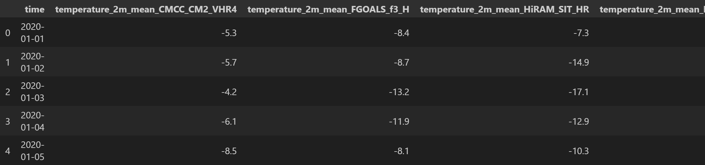
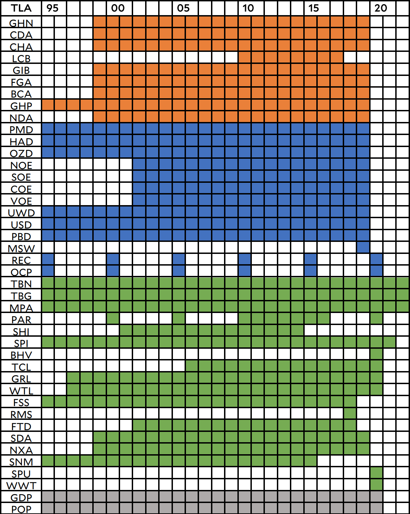
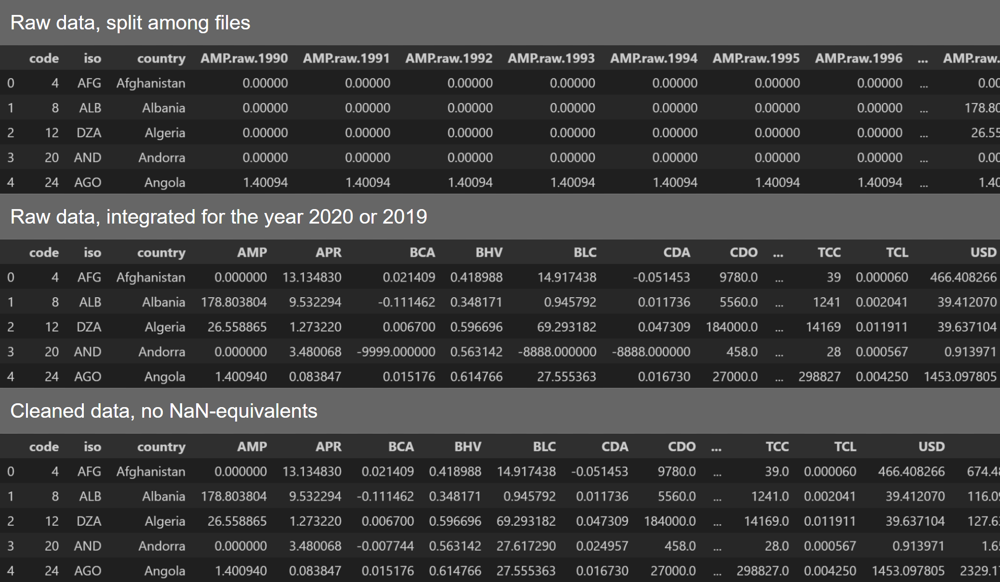
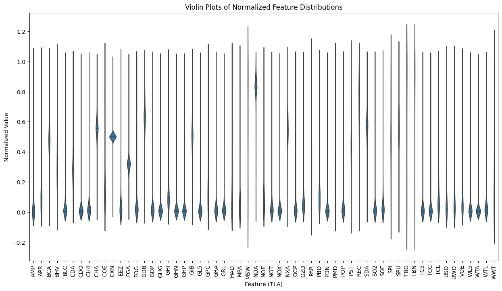
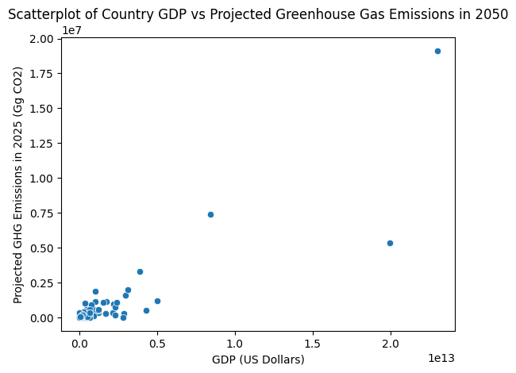
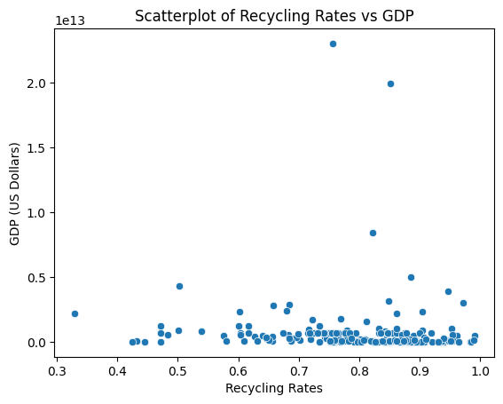
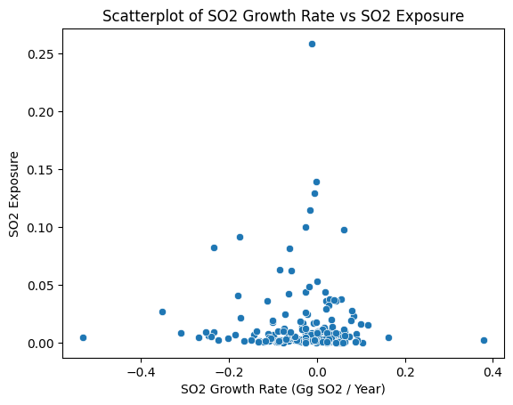
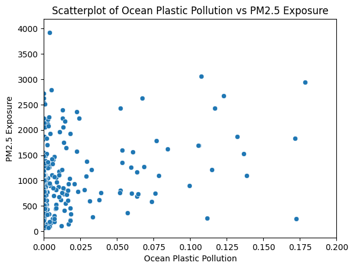
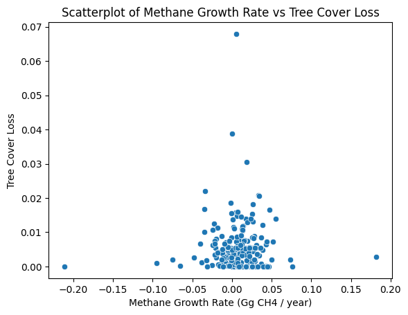
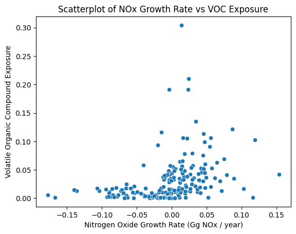

CSCI 5612 Machine Learning for Data Science:
Regional Climate Factor Analysis:
Data Prep / EDA
Initial Data Collection
The first collected dataset originates from the NASA Earthdata website, where many datasets across a variety of globally-focused subjects can be found.
This dataset is specifically provided by SEDAC, the Socio-Economic Data and Applications Center.
The data describe numerous ecological variables by country (or territory) across the world.
These are considered indicators towards each country's "Environmental Performance Index" (EPI).
Through the Earthdata system, the entire table of values was available for download, following account creation, as a CSV file.
From here, the raw data could be simply loaded into a Pandas dataframe.
(Note that accessing the dataset itself will require an account, but viewing the page will not.)
Source:
https://www.earthdata.nasa.gov/data/catalog/sedac-ciesin-sedac-epi-2022-2022.00#overview
The second collected dataset originates from Open-Meteo, an open-source meteorological API with a low barrier to entry.
This dataset contains climate condition predictions made by various climate models.
These "predictions" are made for the past and future in order to ensure that the models match recorded variables.
For the time being, the data collected through this API pertain to temperature predictions, although other variables such as wind speed, humidity, and pressure can easily be retrieved and integrated in the future.
Source:
https://open-meteo.com/en/docs/climate-api?latitude=40.01&longitude=105.27&daily=temperature_2m_mean&end_date=2020-12-31
The Open-Meteo dataset was retrieved using the url below sent with a GET request:
https://climate-api.open-meteo.com/v1/climate?latitude=40.01&longitude=105.27&start_date=2020-01-01&end_date=2020-12-31&models=CMCC_CM2_VHR4,FGOALS_f3_H,HiRAM_SIT_HR,MRI_AGCM3_2_S,EC_Earth3P_HR,MPI_ESM1_2_XR,NICAM16_8S&daily=temperature_2m_mean
To break down this URL, the first specifications are latitude and longitude. These values currently provide results for the CU Boulder campus, but a more widespread analysis can be performed by conglomerating many searches across a larger area. Next, start and end dates were defined, with a maximum range of 1950 to 2050. However, actual predictions of the future are of little concern to this project. Next, the models were included. This includes all 7 of the models that are available to predict mean temperature. Finally, the desired variables are provided. In this case, this only includes mean temperature with a 2 meter resolution.
The data retrieved from Open-Meteo were already fully cleaned, so no measures needed to be taken there. The dataset from SEDAC contained many errors, although not all of them are addressable. The most common errors were missing values, which were filled in the CSV file with the numbers "-9999", "-8888", or "-7777". The presence of these errors was minimal, so a simple imputation with the feature mean sufficed to handle the missing values. The SEDAC dataset also provided a table to show when different variables were available.
Given the absence of values within the raw dataset, it appears that this table describes when variables are generally available rather than fully covered. As seen in the table, only 6 variables are not captured in the resulting dataframe; this was determined to be an acceptable loss as the variables are unimportant. In the future, expanding the search to years further in the past could yield these extra features, if that action is deemed necessary.
Note the removal of values such as "-9999" for Andorra.
One potential problem remaining in the dataset is the prevalence of zero values. In all circumstances, a zero is acceptable. For example, zero could describe "Fish Caught By Trawling" for a landlocked country, or "Black Carbon Growth Rate" for a country without such emissions. While some zero values may be a representation of missing data, there seems to be no objective way to differentiate these instances from genuine data.
The code used to acquire and clean the datasets can be found in this repository:
https://github.com/Machoo/Regional_Climate_Factor_Analysis
Exploratory Data Analysis
To begin with, the violin plot above shows that many values are near zero. This is due to data points being unrecorded, as well as instances where change-over-time variables were accurately stored as being low. Some of the notable values are CHA ("Methane Growth Rate"), FGA ("Flourinated Gas Growth Rate", aka HFCs), NDA ("Dinitrogen Oxide Growth Rate"), and SDA ("Sulfur Dioxide Growth Rate"). Each of these features describe the growth rates of greenhouse gases (methane and dinitrogen monoxide) and pollutants (flourinated gas and sulfur dioxide). Simply put, these values being high are a general confirmation that this dataset is accurate and comprehensive enough to indicate climate change independently.
General Data Observations


From the graph, it appears that countries with declining SO2 concentrations are also those that are more strongly impacted by its presence as a pollutant. This trend indicates that eco-friendly initiatives are successfully lessening the emission of SO2.

The lack of correlation is unexpected, as plastics frequently comprise particulate matter. However, it is still noteworthy that particulate matter exposure seems to have an upper limit regardless of plastic pollution.

